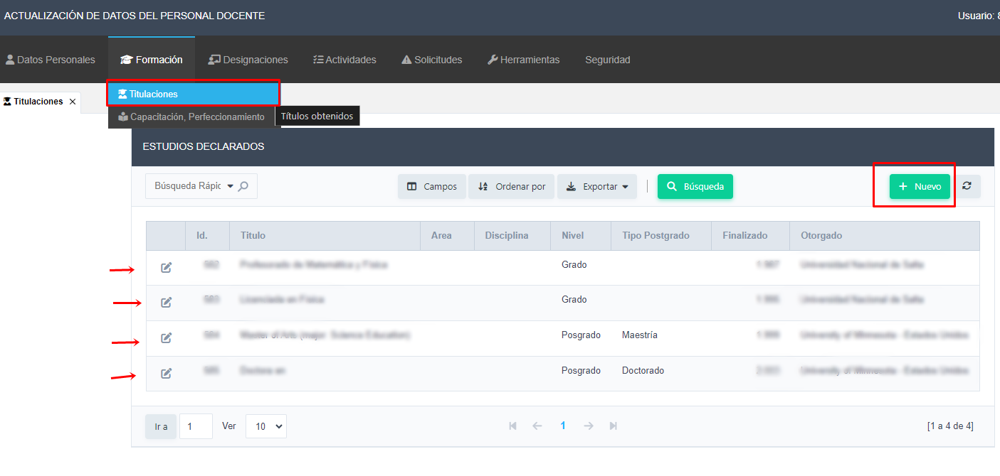
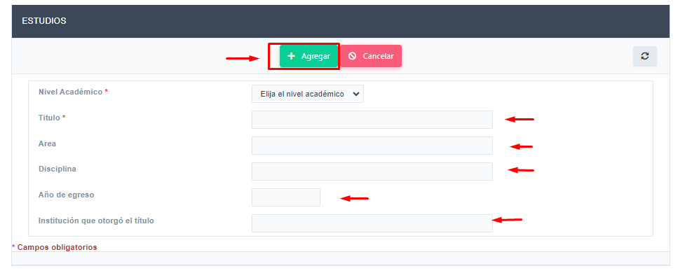

En el ítem de menú Formación -> Titulaciones, encontrará los datos registrados de su formación académica. En esta interfaz podrá editar los datos ya registrados haciendo clic en el botón de editar.
Empleando el botón Nuevo podrá agregar nuevos registros.
Completar los datos solicitados hacer clic en el botón Agregar para guardar el nuevo estudio.